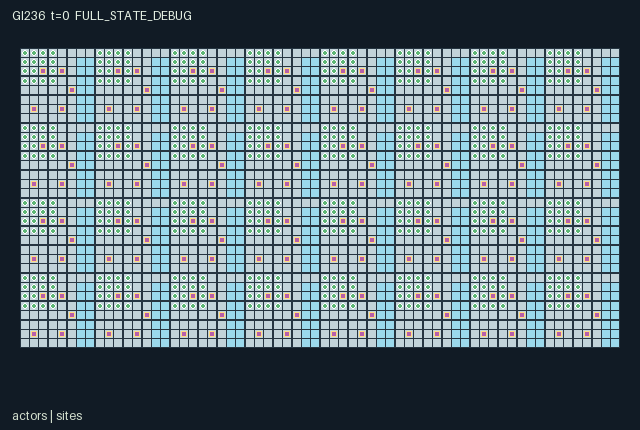

GI236 / SPATIAL
Icebound Harbor Builders
Release verification episode
Untrained uniform legal actions. Actual JAX state sampled along the full original episode; full-state debug camera. No human performance or learning claim.

Run this game
crucibles play --game 236
Start Python locally, then open the address printed by the terminal. Installation, multiplayer, takeover and keyboard controls →
Objective, rewards & ending
Exact task contract
{
"objective": "Keep crews alive through usable crossings, wind shelters, fire supply, rescue and physical foreign freight.",
"natural_termination": "All 512 health values reach zero; natural completion takes precedence over the 1024-tick horizon.",
"interaction": "Local anchoring changes loaded movement; cargo/tool handoffs, shared shelter fuel, road wear, revived health and recipient-depot deliveries persist.",
"observation_access": "Cove geometry is known. Dynamic map view is a radius-two square; the policy sees local integrity/road patches and selected nearest-eight entity rows. Scene visibility uses exactly those entity selections. Off-view events are debug-only."
}Declared per-step reward bounds: -4.0 to 4.0. Observability: partially_observable.
Rules
- Select any of 512 crew members. Tools can change hands; arrows move one native cell and waiting actors can receive cargo.
- Heavy freight moves on foot only beside another actor choosing Anchor that step. Ice takes load stress; roads spend durability under heavy sleds.
- A stone builds a nearby wind shelter or ferry landing, otherwise an east-adjacent ice road. Wood fuels shelters; an unbuilt shelter warms nobody.
- Quarry, timber and outward freight are finite shared stocks. Deliver freight to a different crew depot for personal and recipient-crew rewards.
- A built landing moves a pilot three cells east to actual land and spends local shelter fuel. A rescuer can revive a fallen neighbor with wood.
- Sixteen-tick cold exposure reduces health outside heated built shelters. Thirty-two-tick thaw/freeze phases change ice. All actors fallen ends the episode; otherwise stop at 1024.
Original mechanism document (historical status wording retained)
# Icebound Harbor Builders Status: AUTHORED_NOT_EXECUTED. Source SHA256: 21d55ee55532f079c6fcd041163b2e64bdd044f859fb8cf0263ff04e1fcfba67. All scripts/interventions are UNEXECUTED_AUTHOR_HYPOTHESIS. Native contract: A=512, O=237, U=15, H=1024; scalar int32 actions, float32 observations, fixed int32/bool state. Geometry 64 by 32, x right/y down. Family block_survival. Thirty-two coves are connected by tundra strips and fragile ice channels. All 512 people have native action, observation, reward and done rows. This source contains people and structures, with thaw/freezing ecology; no decorative crowd is counted. Movement uses rotating serial collision resolution, while anchoring reads sanitized simultaneous intents and original positions. A cove can work with a few partners instead of a global command. Stone, wood and freight are single carried units; freight is a heavy sled. Tools gate gathering, ferry piloting and rescue; construction and feeding require materials. Quarry/timber stock replenishes only on sixteen-tick resource ticks. Existing depots hold outward freight; new depot-site construction is not implemented. Shelters and landings start unbuilt, and both are built with stone. Each ferry is a local three-cell crossing, not a free navigation vehicle. Transfers select the first adjacent waiting eligible actor. Expected alternatives include anchored ice hauling versus stone/fuel ferry investment, warm shelters versus immediate shipment labor, and repairing a crossing versus rescue after a break. No advantage was measured. Work costs 0.002 per non-wait intent, ice-break injury costs 0.25, foreign delivery pays carrier 0.3 and each recipient crew member 0.04, rescue pays 0.1, and a cold health loss costs 0.03. Final rewards are clipped to [-4,4]. Ice, roads, health, stock and fuel are physical state, not decorative score substitutes. ## Interface and visibility Cove geometry is known. Dynamic map view is a radius-two square; the policy sees local integrity/road patches and selected nearest-eight entity rows. Scene visibility uses exactly those entity selections. Off-view events are debug-only. Source entry lines: reset 29, legal_actions 56, observe 74, raw_step 101. Exact columns, normalizers, shapes and scene bindings are in manifest.json. Every selected entity slot ends with presence; hidden slots are zero. Crew identities remain fixed, while tools may change. A legal intent can still be blocked by earlier actors, missing simultaneous help, material shortages or geometry. Masked or out-of-range actions become Wait. Actor priority rotates as (loop index + t) mod A. All 512 health values reach zero; natural completion takes precedence over the 1024-tick horizon. Already-done raw calls preserve every state leaf and observation, return zero rewards and true per-agent dones, and preserve terminal causes. Nonterminal calls advance t exactly once. No autoreset or external state exists. Signed identities and sentinels use int32; reset keys are not copied into state. Observation bounds [0,1] and explicit reward clipping [-4,4] are source declarations, not numerical verification. ## Literal source evidence - candidate.py:126: anchored = jnp.any((d <= 1) & anchors & (jnp.arange(512, dtype=jnp.int32) != i)) - candidate.py:131: move = (action >= 1) & (action <= 4) & ~occupied & passable & ((w['cargo'][i] != 3) | anchored) & jnp.any(target != p) - candidate.py:133: stress = move & ~w['land'][ty, tx] - candidate.py:148: build_sites = (sd <= 1) & ((w['site_kind'] == 2) | (w['site_kind'] == 3)) - candidate.py:158: burn = (action == 8) & jnp.any(shelters) & (w['cargo'][i] == 2) & (w['fuel'][j] < 24) - candidate.py:171: deliver = (action == 10) & jnp.any(depots) & (w['cargo'][i] == 3) - candidate.py:177: rescue = (action == 11) & jnp.any(fallen) & (w['cargo'][i] == 2) & (w['tool'][i] == 4) - candidate.py:184: ferry = (action == 12) & jnp.any(docks & w['built']) & (w['tool'][i] == 3) & (w['fuel'][fuel_site] > 0) & free & w['land'][destination[1], destination[0]] - candidate.py:204: warm = jnp.any((distance <= 2) & (s['site_kind'][None, :] == 2) & s['built'][None, :] & (s['fuel'][None, :] > 0), axis=1) - candidate.py:212: s['terminated'] = jnp.all(s['health'] == 0) ## Human operation, provenance and limits Scene data binds actual positions, stock, tools and events. Human single-role/multiple-role control must call the unchanged native joint action interface. No UI has been implemented, opened or played by this author. Role rendering must restrict event presentation to visible entities; global event inspection is debug-only. Four independent world families are authored, without upstream code or assets. Supplied external reference files were permitted but not read. No prior game, results, IR, selection, training, heldout, memory, network, API, local model or numerical package was read/invoked. Current population/family240 and dispatch scope override inherited counts. Parentless initial window: 240 used/reserved of 512, feedback 0. Only bytes/SHA256, JSON/AST and literal structure are checked here. Candidate import/reset/step/observe/legal_actions and provided validators were never executed. Runtime shapes/dtypes, JIT/vmap, terminal replay, mask reachability, script success, finite numerical bounds, resource cost, animation, human playability, non-isomorphism, learning and transfer remain unverified. Independent authorized frozen-source integration must preserve actual failures. No acceptance, deployment or experimental result is authored.
Commands
Roles & abilities
agent_0 quarry worker
agent_1 timber builder
agent_2 sled hauler
agent_3 ferry pilot
agent_4 rescuer
agent_5 quarry worker
agent_6 timber builder
agent_7 sled hauler
agent_8 ferry pilot
agent_9 rescuer
agent_10 quarry worker
agent_11 timber builder
agent_12 sled hauler
agent_13 ferry pilot
agent_14 rescuer
agent_15 quarry worker
agent_16 quarry worker
agent_17 timber builder
agent_18 sled hauler
agent_19 ferry pilot
agent_20 rescuer
agent_21 quarry worker
agent_22 timber builder
agent_23 sled hauler
agent_24 ferry pilot
agent_25 rescuer
agent_26 quarry worker
agent_27 timber builder
agent_28 sled hauler
agent_29 ferry pilot
agent_30 rescuer
agent_31 quarry worker
agent_32 quarry worker
agent_33 timber builder
agent_34 sled hauler
agent_35 ferry pilot
agent_36 rescuer
agent_37 quarry worker
agent_38 timber builder
agent_39 sled hauler
agent_40 ferry pilot
agent_41 rescuer
agent_42 quarry worker
agent_43 timber builder
agent_44 sled hauler
agent_45 ferry pilot
agent_46 rescuer
agent_47 quarry worker
agent_48 quarry worker
agent_49 timber builder
agent_50 sled hauler
agent_51 ferry pilot
agent_52 rescuer
agent_53 quarry worker
agent_54 timber builder
agent_55 sled hauler
agent_56 ferry pilot
agent_57 rescuer
agent_58 quarry worker
agent_59 timber builder
agent_60 sled hauler
agent_61 ferry pilot
agent_62 rescuer
agent_63 quarry worker
agent_64 quarry worker
agent_65 timber builder
agent_66 sled hauler
agent_67 ferry pilot
agent_68 rescuer
agent_69 quarry worker
agent_70 timber builder
agent_71 sled hauler
agent_72 ferry pilot
agent_73 rescuer
agent_74 quarry worker
agent_75 timber builder
agent_76 sled hauler
agent_77 ferry pilot
agent_78 rescuer
agent_79 quarry worker
agent_80 quarry worker
agent_81 timber builder
agent_82 sled hauler
agent_83 ferry pilot
agent_84 rescuer
agent_85 quarry worker
agent_86 timber builder
agent_87 sled hauler
agent_88 ferry pilot
agent_89 rescuer
agent_90 quarry worker
agent_91 timber builder
agent_92 sled hauler
agent_93 ferry pilot
agent_94 rescuer
agent_95 quarry worker
agent_96 quarry worker
agent_97 timber builder
agent_98 sled hauler
agent_99 ferry pilot
agent_100 rescuer
agent_101 quarry worker
agent_102 timber builder
agent_103 sled hauler
agent_104 ferry pilot
agent_105 rescuer
agent_106 quarry worker
agent_107 timber builder
agent_108 sled hauler
agent_109 ferry pilot
agent_110 rescuer
agent_111 quarry worker
agent_112 quarry worker
agent_113 timber builder
agent_114 sled hauler
agent_115 ferry pilot
agent_116 rescuer
agent_117 quarry worker
agent_118 timber builder
agent_119 sled hauler
agent_120 ferry pilot
agent_121 rescuer
agent_122 quarry worker
agent_123 timber builder
agent_124 sled hauler
agent_125 ferry pilot
agent_126 rescuer
agent_127 quarry worker
agent_128 quarry worker
agent_129 timber builder
agent_130 sled hauler
agent_131 ferry pilot
agent_132 rescuer
agent_133 quarry worker
agent_134 timber builder
agent_135 sled hauler
agent_136 ferry pilot
agent_137 rescuer
agent_138 quarry worker
agent_139 timber builder
agent_140 sled hauler
agent_141 ferry pilot
agent_142 rescuer
agent_143 quarry worker
agent_144 quarry worker
agent_145 timber builder
agent_146 sled hauler
agent_147 ferry pilot
agent_148 rescuer
agent_149 quarry worker
agent_150 timber builder
agent_151 sled hauler
agent_152 ferry pilot
agent_153 rescuer
agent_154 quarry worker
agent_155 timber builder
agent_156 sled hauler
agent_157 ferry pilot
agent_158 rescuer
agent_159 quarry worker
agent_160 quarry worker
agent_161 timber builder
agent_162 sled hauler
agent_163 ferry pilot
agent_164 rescuer
agent_165 quarry worker
agent_166 timber builder
agent_167 sled hauler
agent_168 ferry pilot
agent_169 rescuer
agent_170 quarry worker
agent_171 timber builder
agent_172 sled hauler
agent_173 ferry pilot
agent_174 rescuer
agent_175 quarry worker
agent_176 quarry worker
agent_177 timber builder
agent_178 sled hauler
agent_179 ferry pilot
agent_180 rescuer
agent_181 quarry worker
agent_182 timber builder
agent_183 sled hauler
agent_184 ferry pilot
agent_185 rescuer
agent_186 quarry worker
agent_187 timber builder
agent_188 sled hauler
agent_189 ferry pilot
agent_190 rescuer
agent_191 quarry worker
agent_192 quarry worker
agent_193 timber builder
agent_194 sled hauler
agent_195 ferry pilot
agent_196 rescuer
agent_197 quarry worker
agent_198 timber builder
agent_199 sled hauler
agent_200 ferry pilot
agent_201 rescuer
agent_202 quarry worker
agent_203 timber builder
agent_204 sled hauler
agent_205 ferry pilot
agent_206 rescuer
agent_207 quarry worker
agent_208 quarry worker
agent_209 timber builder
agent_210 sled hauler
agent_211 ferry pilot
agent_212 rescuer
agent_213 quarry worker
agent_214 timber builder
agent_215 sled hauler
agent_216 ferry pilot
agent_217 rescuer
agent_218 quarry worker
agent_219 timber builder
agent_220 sled hauler
agent_221 ferry pilot
agent_222 rescuer
agent_223 quarry worker
agent_224 quarry worker
agent_225 timber builder
agent_226 sled hauler
agent_227 ferry pilot
agent_228 rescuer
agent_229 quarry worker
agent_230 timber builder
agent_231 sled hauler
agent_232 ferry pilot
agent_233 rescuer
agent_234 quarry worker
agent_235 timber builder
agent_236 sled hauler
agent_237 ferry pilot
agent_238 rescuer
agent_239 quarry worker
agent_240 quarry worker
agent_241 timber builder
agent_242 sled hauler
agent_243 ferry pilot
agent_244 rescuer
agent_245 quarry worker
agent_246 timber builder
agent_247 sled hauler
agent_248 ferry pilot
agent_249 rescuer
agent_250 quarry worker
agent_251 timber builder
agent_252 sled hauler
agent_253 ferry pilot
agent_254 rescuer
agent_255 quarry worker
agent_256 quarry worker
agent_257 timber builder
agent_258 sled hauler
agent_259 ferry pilot
agent_260 rescuer
agent_261 quarry worker
agent_262 timber builder
agent_263 sled hauler
agent_264 ferry pilot
agent_265 rescuer
agent_266 quarry worker
agent_267 timber builder
agent_268 sled hauler
agent_269 ferry pilot
agent_270 rescuer
agent_271 quarry worker
agent_272 quarry worker
agent_273 timber builder
agent_274 sled hauler
agent_275 ferry pilot
agent_276 rescuer
agent_277 quarry worker
agent_278 timber builder
agent_279 sled hauler
agent_280 ferry pilot
agent_281 rescuer
agent_282 quarry worker
agent_283 timber builder
agent_284 sled hauler
agent_285 ferry pilot
agent_286 rescuer
agent_287 quarry worker
agent_288 quarry worker
agent_289 timber builder
agent_290 sled hauler
agent_291 ferry pilot
agent_292 rescuer
agent_293 quarry worker
agent_294 timber builder
agent_295 sled hauler
agent_296 ferry pilot
agent_297 rescuer
agent_298 quarry worker
agent_299 timber builder
agent_300 sled hauler
agent_301 ferry pilot
agent_302 rescuer
agent_303 quarry worker
agent_304 quarry worker
agent_305 timber builder
agent_306 sled hauler
agent_307 ferry pilot
agent_308 rescuer
agent_309 quarry worker
agent_310 timber builder
agent_311 sled hauler
agent_312 ferry pilot
agent_313 rescuer
agent_314 quarry worker
agent_315 timber builder
agent_316 sled hauler
agent_317 ferry pilot
agent_318 rescuer
agent_319 quarry worker
agent_320 quarry worker
agent_321 timber builder
agent_322 sled hauler
agent_323 ferry pilot
agent_324 rescuer
agent_325 quarry worker
agent_326 timber builder
agent_327 sled hauler
agent_328 ferry pilot
agent_329 rescuer
agent_330 quarry worker
agent_331 timber builder
agent_332 sled hauler
agent_333 ferry pilot
agent_334 rescuer
agent_335 quarry worker
agent_336 quarry worker
agent_337 timber builder
agent_338 sled hauler
agent_339 ferry pilot
agent_340 rescuer
agent_341 quarry worker
agent_342 timber builder
agent_343 sled hauler
agent_344 ferry pilot
agent_345 rescuer
agent_346 quarry worker
agent_347 timber builder
agent_348 sled hauler
agent_349 ferry pilot
agent_350 rescuer
agent_351 quarry worker
agent_352 quarry worker
agent_353 timber builder
agent_354 sled hauler
agent_355 ferry pilot
agent_356 rescuer
agent_357 quarry worker
agent_358 timber builder
agent_359 sled hauler
agent_360 ferry pilot
agent_361 rescuer
agent_362 quarry worker
agent_363 timber builder
agent_364 sled hauler
agent_365 ferry pilot
agent_366 rescuer
agent_367 quarry worker
agent_368 quarry worker
agent_369 timber builder
agent_370 sled hauler
agent_371 ferry pilot
agent_372 rescuer
agent_373 quarry worker
agent_374 timber builder
agent_375 sled hauler
agent_376 ferry pilot
agent_377 rescuer
agent_378 quarry worker
agent_379 timber builder
agent_380 sled hauler
agent_381 ferry pilot
agent_382 rescuer
agent_383 quarry worker
agent_384 quarry worker
agent_385 timber builder
agent_386 sled hauler
agent_387 ferry pilot
agent_388 rescuer
agent_389 quarry worker
agent_390 timber builder
agent_391 sled hauler
agent_392 ferry pilot
agent_393 rescuer
agent_394 quarry worker
agent_395 timber builder
agent_396 sled hauler
agent_397 ferry pilot
agent_398 rescuer
agent_399 quarry worker
agent_400 quarry worker
agent_401 timber builder
agent_402 sled hauler
agent_403 ferry pilot
agent_404 rescuer
agent_405 quarry worker
agent_406 timber builder
agent_407 sled hauler
agent_408 ferry pilot
agent_409 rescuer
agent_410 quarry worker
agent_411 timber builder
agent_412 sled hauler
agent_413 ferry pilot
agent_414 rescuer
agent_415 quarry worker
agent_416 quarry worker
agent_417 timber builder
agent_418 sled hauler
agent_419 ferry pilot
agent_420 rescuer
agent_421 quarry worker
agent_422 timber builder
agent_423 sled hauler
agent_424 ferry pilot
agent_425 rescuer
agent_426 quarry worker
agent_427 timber builder
agent_428 sled hauler
agent_429 ferry pilot
agent_430 rescuer
agent_431 quarry worker
agent_432 quarry worker
agent_433 timber builder
agent_434 sled hauler
agent_435 ferry pilot
agent_436 rescuer
agent_437 quarry worker
agent_438 timber builder
agent_439 sled hauler
agent_440 ferry pilot
agent_441 rescuer
agent_442 quarry worker
agent_443 timber builder
agent_444 sled hauler
agent_445 ferry pilot
agent_446 rescuer
agent_447 quarry worker
agent_448 quarry worker
agent_449 timber builder
agent_450 sled hauler
agent_451 ferry pilot
agent_452 rescuer
agent_453 quarry worker
agent_454 timber builder
agent_455 sled hauler
agent_456 ferry pilot
agent_457 rescuer
agent_458 quarry worker
agent_459 timber builder
agent_460 sled hauler
agent_461 ferry pilot
agent_462 rescuer
agent_463 quarry worker
agent_464 quarry worker
agent_465 timber builder
agent_466 sled hauler
agent_467 ferry pilot
agent_468 rescuer
agent_469 quarry worker
agent_470 timber builder
agent_471 sled hauler
agent_472 ferry pilot
agent_473 rescuer
agent_474 quarry worker
agent_475 timber builder
agent_476 sled hauler
agent_477 ferry pilot
agent_478 rescuer
agent_479 quarry worker
agent_480 quarry worker
agent_481 timber builder
agent_482 sled hauler
agent_483 ferry pilot
agent_484 rescuer
agent_485 quarry worker
agent_486 timber builder
agent_487 sled hauler
agent_488 ferry pilot
agent_489 rescuer
agent_490 quarry worker
agent_491 timber builder
agent_492 sled hauler
agent_493 ferry pilot
agent_494 rescuer
agent_495 quarry worker
agent_496 quarry worker
agent_497 timber builder
agent_498 sled hauler
agent_499 ferry pilot
agent_500 rescuer
agent_501 quarry worker
agent_502 timber builder
agent_503 sled hauler
agent_504 ferry pilot
agent_505 rescuer
agent_506 quarry worker
agent_507 timber builder
agent_508 sled hauler
agent_509 ferry pilot
agent_510 rescuer
agent_511 quarry worker
Observation permissions
Training receives only the original observation rows. Role cameras use declared visibility; debug cameras are explicitly marked. Local benchmark records log debug exposure and role takeover history.
Exact observation layout
[
{
"slice": [
0,
12
],
"meaning": "Self: x/63,y/31,crew/31,tool/4,cargo/3,health/8,signal/4,anchor,event/9,t/1024,thaw phase,id/511",
"visibility": "self"
},
{
"slice": [
12,
92
],
"meaning": "8 nearest agents within Manhattan 4: x/63,y/31,crew/31,tool/4,cargo/3,health/8,signal/4,anchor,id/511,presence. Self may occupy a slot; absent rows zero.",
"visibility": "local"
},
{
"slice": [
92,
172
],
"meaning": "8 nearest sites within Manhattan 5: x/63,y/31,kind/4,crew/31,stock/12,built,fuel/24,delivered/1024,id/159,presence",
"visibility": "local"
},
{
"slice": [
172,
222
],
"meaning": "Clipped 5x5 row-major patch: 25 ice integrity/8 then 25 road strength/6; outside coordinates clamp",
"visibility": "local"
},
{
"slice": [
222,
223
],
"meaning": "Self tile/4: land,ice,cracked ice,road,water",
"visibility": "local"
},
{
"slice": [
223,
237
],
"meaning": "Legal intents for actions 1..14; contention and geometry can still block them",
"visibility": "self"
}
]Entity visibility & attributes
[
{
"id": "actors",
"kind": "agent",
"count": 512,
"position": [
"pos"
],
"active": [
"active"
],
"visibility": [
"agent_visible"
],
"attributes": [
{
"state_path": [
"team"
],
"meaning": "Crew identity",
"display": "category"
},
{
"state_path": [
"tool"
],
"meaning": "0 quarry,1 timber,2 sled,3 pilot,4 rescue tool",
"display": "category"
},
{
"state_path": [
"cargo"
],
"meaning": "0 empty,1 stone,2 wood,3 heavy freight",
"display": "category"
},
{
"state_path": [
"health"
],
"meaning": "Warmth/injury health; zero waits for rescue",
"display": "bar"
},
{
"state_path": [
"signal"
],
"meaning": "Help signal ticks remaining",
"display": "number"
},
{
"state_path": [
"anchor"
],
"meaning": "Anchoring intent this step",
"display": "flag"
}
]
},
{
"id": "sites",
"kind": "landmark",
"count": 160,
"position": [
"site_pos"
],
"active": [
"site_active"
],
"visibility": [
"site_visible"
],
"attributes": [
{
"state_path": [
"site_kind"
],
"meaning": "0 quarry,1 timber,2 shelter,3 landing,4 depot",
"display": "category"
},
{
"state_path": [
"site_crew"
],
"meaning": "Local crew",
"display": "category"
},
{
"state_path": [
"stock"
],
"meaning": "Remaining material or outward freight",
"display": "number"
},
{
"state_path": [
"built"
],
"meaning": "Structure built",
"display": "flag"
},
{
"state_path": [
"fuel"
],
"meaning": "Shelter firewood units",
"display": "bar"
},
{
"state_path": [
"delivered"
],
"meaning": "Foreign freight received",
"display": "number"
}
]
}
]Actual verification & provenance
Per-game execution receipt
{
"game": "gi236",
"status": "PASS",
"verification_revision": 2,
"source_sha256": "21d55ee55532f079c6fcd041163b2e64bdd044f859fb8cf0263ff04e1fcfba67",
"seed": 20261101,
"runtime": {
"jax": "0.4.38",
"numpy": "1.26.4",
"devices": [
"TFRT_CPU_0"
]
},
"dimensions": {
"num_agents": 512,
"observation_size": 237,
"num_actions": 15,
"max_steps": 1024
},
"checks": {
"eager_reset": {
"status": "PASS",
"seconds": 6.038891553878784
},
"observation_spaces_legal_masks": {
"status": "PASS",
"seconds": 0.46009278297424316
},
"eager_step": {
"status": "PASS",
"seconds": 2.7210657596588135
},
"jit_reset": {
"status": "PASS",
"seconds": 2.746077299118042
},
"jit_step": {
"status": "PASS",
"seconds": 7.7525811195373535
},
"eager_jit_integer_parity_float_measurement": {
"status": "PASS",
"seconds": 0.025745391845703125
},
"jit_vmap_reset": {
"status": "PASS",
"seconds": 3.720977306365967
},
"jit_vmap_step": {
"status": "PASS",
"seconds": 15.31478476524353
},
"outer_autoreset_api": {
"status": "PASS",
"seconds": 14.68873405456543
},
"full_original_horizon_episode_and_render": {
"status": "PASS",
"seconds": 50.83534526824951
}
},
"human_scores": null,
"browser_controls": "PENDING",
"failures": [],
"elapsed_seconds": 105.80117440223694,
"float_parity_max_abs": 5.960464477539063e-08,
"numerical_parity": "UNDETERMINED_NONZERO_FLOAT_DIFFERENCE",
"raw_terminal_absorbing": "PASS",
"terminal_outer_reset": "PASS",
"episode_steps": 176,
"scripted_random_returns": [
-0.46799999405629933,
-0.47599999280646443,
-0.46999999415129423,
-0.46799999405629933,
-0.4559999934863299,
-0.4559999967459589,
-0.4599999920465052,
-0.4639999938663095,
-0.47599999443627894,
-0.4639999938663095,
-0.463999992236495,
-0.46999999415129423,
-0.46799999568611383,
-0.4639999938663095,
-0.4579999919515103,
-0.47400000132620335,
-0.49200000218115747,
-0.463999992236495,
-0.47599999443627894,
-0.4679999924264848,
-0.5539999997708946,
-0.46799999731592834,
-0.5499999995809048,
-0.4639999938663095,
-0.48400000017136335,
-0.49200000218115747,
-0.5080000013113022,
-0.4479999931063503,
-0.46799999405629933,
-0.47999999625608325,
-0.4619999937713146,
-0.4699999925214797,
-0.4199999929405749,
-0.448000003118068,
-0.4159999929834157,
-0.3999999954830855,
-0.4520000033080578,
-0.4199999962002039,
-0.6620000072289258,
-0.4239999931305647,
-0.42399999825283885,
-0.4139999945182353,
-0.42799999355338514,
-0.43199999537318945,
-0.42599999508820474,
-0.40999999758787453,
-0.42799999518319964,
-0.4580000035930425,
-0.6540000070817769,
-0.42599999508820474,
-0.43199999374337494,
-0.602000008104369,
-0.41999999969266355,
-0.5140000025276095,
-0.42799999518319964,
-0.42799999355338514,
-0.6199999984819442,
-0.15599999390542507,
-0.458000001963228,
-0.42999999527819455,
-0.42799999355338514,
-0.448000003118068,
-0.4119999944232404,
-0.6179999997839332,
-0.5060000002849847,
-0.44800000125542283,
-0.5160000007599592,
-0.41599999461323023,
-0.4360000006854534,
-0.43199999374337494,
-0.42799999518319964,
-0.42399999662302434,
-0.444000001065433,
-0.4199999945703894,
-0.6359999992419034,
-0.4400000008754432,
-0.4139999945182353,
-0.46600000211037695,
-0.6500000066589564,
-0.658000007038936,
-0.4659999939613044,
-0.6460000074002892,
-0.4499999932013452,
-0.4679999924264848,
-0.153999985428527,
-0.48200000007636845,
-0.4559999918565154,
-0.6780000051949173,
-0.4619999954011291,
-0.453999993391335,
-0.49000000208616257,
-0.5600000016856939,
-0.47399999271146953,
-0.4679999924264848,
-0.47599999443627894,
-0.6620000007096678,
-0.3759999987669289,
-0.38199999765492976,
-0.37799999746493995,
-0.36999999545514584,
-0.38599999784491956,
-0.38599999621510506,
-0.3959999983198941,
-0.38999999477528036,
-0.6080000093206763,
-0.6240000100806355,
-0.38399999612011015,
-0.38999999477528036,
-0.4620000012218952,
-0.4000000017695129,
-0.4640000029467046,
-0.39399999496527016,
-0.1599999857135117,
-0.5660000036004931,
-0.4639999938663095,
-0.4599999936763197,
-0.4679999924264848,
-0.4699999925214797,
-0.46999999578110874,
-0.4699999925214797,
-0.3199999912176281,
-0.48600000026635826,
-0.4599999953061342,
-0.47400000132620335,
-0.4619999921415001,
-0.48600000026635826,
-0.48000000161118805,
-0.6780000068247318,
-0.5220000026747584,
-0.5120000005699694,
-0.42599999508820474,
-0.4340000005904585,
-0.43599999556317925,
-0.41599999461323023,
-0.41799999633803964,
-0.6500000015366822,
-0.42799999518319964,
-0.43399999709799886,
-0.42399999662302434,
-0.6400000096764416,
-0.42199999326840043,
-0.6300000005867332,
-0.42399999336339533,
-0.4239999947603792,
-0.46999999415129423,
-0.4679999924264848,
-0.47599999280646443,
-0.4599999936763197,
-0.63000000664033,
-0.5060000028461218,
-0.6139999988954514,
-0.4699999925214797,
-0.5539999997708946,
-0.4579999935813248,
-0.4619999921415001,
-0.4599999936763197,
-0.618000007700175,
-0.47399999271146953,
-0.46599999559111893,
-0.48200000170618296,
-0.47600000142119825,
-0.6380000102799386,
-0.463999992236495,
-0.47800000314600766,
-0.4619999937713146,
-0.4599999920465052,
-0.46799999405629933,
-0.6659999976400286,
-0.47799999988637865,
-0.4659999923314899,
-0.4639999938663095,
-0.4599999920465052,
-0.6900000057648867,
-0.46999999415129423,
-0.6899999987799674,
-0.48400000017136335,
-0.48400000017136335,
-0.602000001585111,
-0.4519999965559691,
-0.4419999928213656,
-0.47199999424628913,
-0.6140000005252659,
-0.6180000023450702,
-0.4619999937713146,
-0.48600000026635826,
-0.4479999931063503,
-0.4519999949261546,
-0.6920000058598816,
-0.4780000033788383,
-0.5860000082757324,
-0.443999994546175,
-0.4659999939613044,
-0.1559999871533364,
-0.4679999924264848,
-0.6059999985154718,
-0.5140000032261014,
-0.4599999920465052,
-0.4579999919515103,
-0.47799999290145934,
-0.6279999995604157,
-0.4639999938663095,
-0.4659999939613044,
-0.48400000017136335,
-0.6080000002402812,
-0.4499999932013452,
-0.4619999921415001,
-0.6720000065397471,
-0.4599999953061342,
-0.47599999443627894,
-0.49000000208616257,
-0.47199999424628913,
-0.47199999424628913,
-0.5040000027511269,
-0.4599999953061342,
-0.4619999921415001,
-0.46599999722093344,
-0.463999992236495,
-0.5520000013057142,
-0.4699999925214797,
-0.4399999943561852,
-0.4579999935813248,
-0.47199999261647463,
-0.4639999938663095,
-0.4619999937713146,
-0.47799999616108835,
-0.45999999693594873,
-0.5499999995809048,
-0.48400000017136335,
-0.47399999271146953,
-0.4619999954011291,
-0.4659999923314899,
-0.47199999261647463,
-0.4579999952111393,
-0.678000001469627,
-0.5860000082757324,
-0.5520000013057142,
-0.47599999443627894,
-0.4579999935813248,
-0.4599999920465052,
-0.4639999938663095,
-0.48200000170618296,
-0.5479999994859099,
-0.463999992236495,
-0.4699999925214797,
-0.6420000072102994,
-0.47199999261647463,
-0.4599999920465052,
-0.47599999443627894,
-0.47399999597109854,
-0.6360000085551292,
-0.4579999919515103,
-0.6559999971650541,
-0.47399999434128404,
-0.4479999931063503,
-0.4619999937713146,
-0.4599999953061342,
-0.33999999868683517,
-0.32999999658204615,
-0.35399999911896884,
-0.34599999873898923,
-0.5340000016149133,
-0.33999999868683517,
-0.3379999967291951,
-0.34999999590218067,
-0.34599999710917473,
-0.33799999696202576,
-0.3419999987818301,
-0.34399999724701047,
-0.34000000008381903,
-0.43000000552274287,
-0.33599999523721635,
-0.3479999974370003,
-0.47399999271146953,
-0.17399998637847602,
-0.48200000170618296,
-0.6199999991804361,
-0.6820000000298023,
-0.6880000056698918,
-0.4619999937713146,
-0.4559999951161444,
-0.6739999996498227,
-0.1659999859984964,
-0.47199999587610364,
-0.4619999937713146,
-0.6799999983049929,
-0.4459999946411699,
-0.7060000100173056,
-0.48000000161118805,
-0.5420000040903687,
-0.4699999925214797,
-0.4659999923314899,
-0.48800000036135316,
-0.6940000059548765,
-0.4579999935813248,
-0.5640000002458692,
-0.5380000006407499,
-0.612000000430271,
-0.46399999549612403,
-0.6820000016596168,
-0.47399999760091305,
-0.46799999568611383,
-0.4579999952111393,
-0.4519999965559691,
-0.45999999693594873,
-0.48200000007636845,
-0.5419999992009252,
-0.4599999920465052,
-0.46999999415129423,
-0.47999999998137355,
-0.4579999919515103,
-0.5040000011213124,
-0.6299999996554106,
-0.4439999929163605,
-0.6019999999552965,
-0.463999992236495,
-0.4579999952111393,
-0.49800000083632767,
-0.45999999693594873,
-0.48600000026635826,
-0.48000000161118805,
-0.4619999954011291,
-0.4599999920465052,
-0.6360000015702099,
-0.5040000011213124,
-0.5640000018756837,
-0.47600000142119825,
-0.4599999920465052,
-0.47399999271146953,
-0.49000000208616257,
-0.6100000019650906,
-0.5140000015962869,
-0.4559999967459589,
-0.47600000142119825,
-0.4579999935813248,
-0.46999999415129423,
-0.6820000000298023,
-0.4659999939613044,
-0.5460000010207295,
-0.684000005479902,
-0.49400000064633787,
-0.4599999953061342,
-0.4639999938663095,
-0.4860000037588179,
-0.4679999924264848,
-0.4659999923314899,
-0.568000003695488,
-0.4639999938663095,
-0.878000010503456,
-0.5980000013951212,
-0.5660000003408641,
-0.4499999932013452,
-0.47800000151619315,
-0.47799999290145934,
-0.677999998209998,
-0.47599999443627894,
-0.48200000170618296,
-0.4459999913815409,
-0.6099999987054616,
-0.6039999984204769,
-0.48400000180117786,
-0.46799999568611383,
-0.48400000017136335,
-0.4599999953061342,
-0.4699999925214797,
-0.48600000026635826,
-0.474000004818663,
-0.46999999415129423,
-0.46999999415129423,
-0.47600000305101275,
-0.48200000007636845,
-0.5620000017806888,
-0.4639999938663095,
-0.6920000058598816,
-0.453999993391335,
-0.4579999935813248,
-0.4539999917615205,
-0.4619999937713146,
-0.47199999587610364,
-0.7020000063348562,
-0.46399999549612403,
-0.6579999988898635,
-0.6699999978300184,
-0.5999999982304871,
-0.4519999932963401,
-0.46599999559111893,
0.1420000207144767,
-0.4619999937713146,
-0.8120000041089952,
-0.47600000142119825,
-0.4519999916665256,
-0.5500000012107193,
-0.4539999950211495,
-0.4459999946411699,
-0.46799999731592834,
-0.46799999568611383,
-0.47599999280646443,
-0.46399999549612403,
-0.4579999919515103,
-0.36599999060854316,
-0.47000000113621354,
-0.6719999979250133,
-0.5660000019706786,
-0.4659999939613044,
-0.5000000025611371,
-0.47799999988637865,
-0.36399998888373375,
-0.7020000063348562,
-0.46799999405629933,
-0.4599999936763197,
-0.5419999992009252,
-0.5760000008158386,
-0.453999993391335,
-0.7920000047888607,
-0.6099999987054616,
-0.4559999967459589,
-0.49000000045634806,
-0.46999999578110874,
-0.5999999998603016,
-0.4599999953061342,
-0.4579999935813248,
-0.612000000430271,
-0.4619999954011291,
-0.4599999953061342,
-0.4679999924264848,
-0.47600000142119825,
-0.5399999991059303,
-0.4619999954011291,
-0.46600000420585275,
-0.4659999939613044,
-0.4599999936763197,
-0.4539999917615205,
-0.47400000295601785,
-0.45600000326521695,
-0.6420000027865171,
-0.6420000011567026,
-0.43199999537318945,
-0.4480000014882535,
-0.6640000075567514,
-0.4119999927934259,
-0.42399999662302434,
-0.44000000273808837,
-0.41799999633803964,
-0.43800000101327896,
-0.41599999787285924,
-0.43199999537318945,
-0.43399999383836985,
-0.624000001931563,
-0.42199999489821494,
-0.46799999405629933,
-0.48600000026635826,
-0.47399999271146953,
-0.4599999953061342,
-0.17399999336339533,
-0.5080000029411167,
-0.6139999988954514,
-0.4659999939613044,
-0.545999999390915,
-0.4659999923314899,
-0.4659999939613044,
-0.46799999568611383,
-0.5720000076107681,
-0.453999993391335,
-0.6759999997448176,
-0.4539999950211495,
-0.48800000362098217,
-0.4659999923314899,
-0.4659999923314899,
-0.46399999549612403,
-0.4479999914765358,
-0.37399999098852277,
-0.4579999935813248,
-0.47199999750591815,
-0.4659999923314899,
-0.6599999989848584,
-0.46199999703094363,
-0.4619999937713146,
-0.4539999950211495,
-0.6760000050999224,
-0.6040000016801059,
-0.47399999434128404,
-0.4159999927505851,
-0.4159999929834157,
-0.437999993795529,
-0.5800000070594251,
-0.42399999941699207,
-0.43199999374337494,
-0.6179999997839332,
-0.43599999719299376,
-0.5420000089798123,
-0.43199999374337494,
-0.43199999537318945,
-0.42199999489821494,
-0.5699999995995313,
-0.42199999489821494,
-0.8279999971855432,
-0.444000001065433,
-0.46999999950639904,
-0.545999999390915,
-0.6259999994654208,
-0.47200000123120844,
-0.6820000053849071,
-0.4619999921415001,
-0.4659999923314899,
-0.6679999977350235,
-0.1659999843686819,
-0.45999999693594873,
-0.545999999390915,
-0.4579999919515103,
-0.46199999703094363,
-0.4459999995306134,
-0.46599999722093344,
-0.6820000000298023
],
"terminal": true,
"demo_information": "FULL_STATE_DEBUG",
"demo_frames": 6,
"render_roles_checked": 512
}Chromium control verification
{
"status": "PENDING"
}Original identity and file hashes
{
"id": 236,
"key": "gi236",
"title": "Icebound Harbor Builders",
"summary": "",
"tags": [],
"family": "spatial",
"dimensions": {
"num_agents": 512,
"observation_size": 237,
"num_actions": 15,
"max_steps": 1024
},
"source_sha256": "21d55ee55532f079c6fcd041163b2e64bdd044f859fb8cf0263ff04e1fcfba67",
"manifest_sha256": "a3363bb8dbe40b636a3aa7439c4ada0e50241f9b0b95372eb61a0bed593ca303",
"files": [
{
"file": "candidate.py",
"sha256": "21d55ee55532f079c6fcd041163b2e64bdd044f859fb8cf0263ff04e1fcfba67",
"bytes": 14963,
"origin": "work/exp_2/game_incubator_v3/sources/game-v3-00236/attempt_00/candidate.py"
},
{
"file": "manifest.json",
"sha256": "a3363bb8dbe40b636a3aa7439c4ada0e50241f9b0b95372eb61a0bed593ca303",
"bytes": 72018,
"origin": "work/exp_2/game_incubator_v3/sources/game-v3-00236/attempt_00/manifest.json"
},
{
"file": "scene.json",
"sha256": "caee7a36a39187f8266a7e888e13ffb448cdd130fe458d00610c54968d82f825",
"bytes": 6977,
"origin": "work/exp_2/game_incubator_v3/sources/game-v3-00236/attempt_00/scene.json"
},
{
"file": "mechanism.md",
"sha256": "62e9f5571769dc7b95c4aa9b127023a6e4aca1fa432bff5c82b61d5013079e84",
"bytes": 5543,
"origin": "work/exp_2/game_incubator_v3/sources/game-v3-00236/attempt_00/mechanism.md"
},
{
"file": "playthrough.json",
"sha256": "5669fc6d05af5f91b9e3d1ca85d7263c69ff78858f18926d952dcfcf6001e12c",
"bytes": 176448,
"origin": "work/exp_2/game_incubator_v3/sources/game-v3-00236/attempt_00/playthrough.json"
}
],
"original_status": "SOURCE_ONLY",
"original_saved_replay": false,
"release_validation": "PASS",
"human_scores": null,
"browser_validation": "PENDING"
}